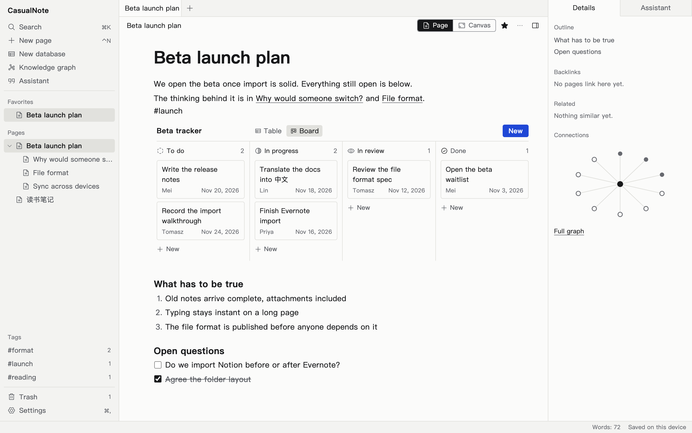
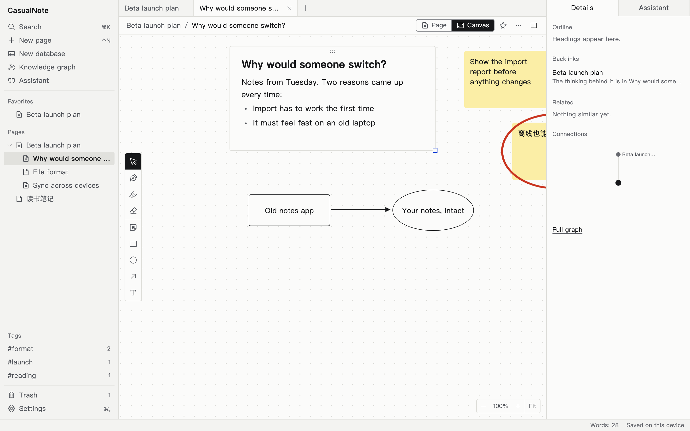
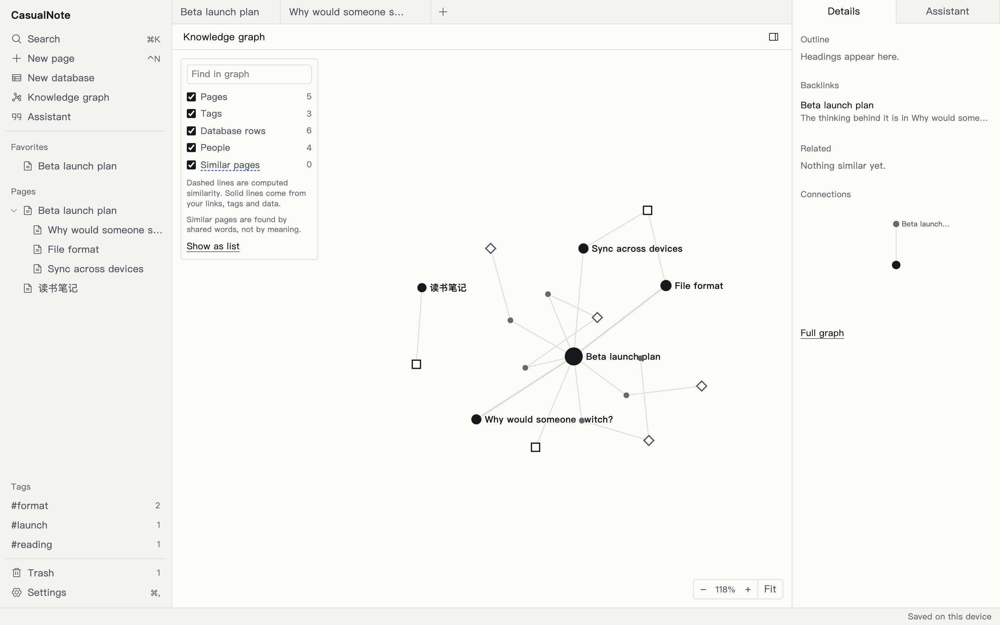

Notes in any language, on your machine, under a licence that stays open.
Documents, databases, canvas and pen, with a knowledge graph and an optional assistant you control.
Early and unreleased. Your notes stay in your browser, so keep an export of anything you care about.

One page. Write it, then lay it out.
A switch turns any page into a canvas. Your text moves onto it as a card you can still edit, next to sticky notes, shapes, arrows and pen strokes.
- Slash menu, Markdown shortcuts, links between pages, backlinks
- Pressure-aware ink, with partial erase
- Databases with table and board views, inside any page

Multilingual from the first commit.
Input methods, right-to-left layout and search are requirements in every language, not translations added later.
- 离线也能用，笔记归你所有。
- ملاحظاتك تبقى لك، حتى دون اتصال.
- आपके नोट्स आपके ही रहते हैं।
- ノートはあなたのもの。
- Tus notas siguen siendo tuyas.
Translations of the interface are drafts until reviewed by native speakers.

See how your notes connect.
The graph is worked out from your pages, tags, tasks and people. It holds nothing of its own, so it always agrees with your notes. Connections you made and connections that were guessed look different.
AI you can turn off, and that asks first.
On the web
Connect your own provider with your own key: Anthropic, or anything OpenAI-compatible. Nothing is sent until you set it up, and the panel names where your notes are going.
On desktop
Download a model and run it on your computer, so your notes stay there. Early macOS build; no real model has been run through it yet.
The assistant cannot change a note without your approval. Every change it proposes shows what it will do and what it read, and undoes in one step. Other tools can connect through MCP, using the same set of tools.
Leave whenever you like.
Export is one documented file with plain Markdown inside. A small script with no dependencies on us can check and unpack it.
$ python3 tools/cnotepack.py extract notes.cnotepack ./out
$ ls out/readable
Beta launch plan.md 读书笔记.md ...Where it stands
We would rather you know now.
- Works in the browser
- Writing, links, databases, canvas and pen, search, knowledge graph, export and import, six interface languages
- Works, with limits
- The assistant and MCP server have only been tested against a stand-in provider. Pen has not been judged on real devices. Storage and encrypted sync are new, and the encryption has had no outside review. Large workspaces are too slow today: typing on a 5,000-block page and search across 100,000 pages both miss their targets, and a simulated five-year history crashed the merge library
- Being built
- Desktop app with local models, for macOS first; meaning search as an optional download
- Later
- Self-hosted server for teams, mobile apps
Apache-2.0. All of it.
The engine, the apps and the server to come. No enterprise edition, no licence key and no paid folder in this repository.
Try it in your browser